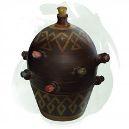
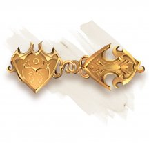
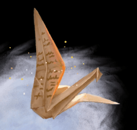
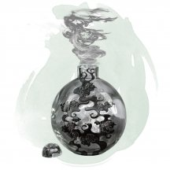
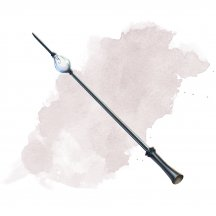
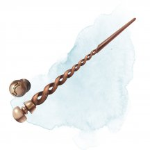
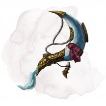

- Доспех (средний или тяжёлый, кроме шкурного), необычный
- Рекомендованная стоимость: 101-500 зм
Эти доспехи усилены адамантином, одним из самых прочных из существующих веществ. Пока вы носите эти доспехи, все критические попадания по вам считаются обычными попаданиями.
Магические предметы
Официальные материалы от Wizards of the Coast и от издательств, поддерживаемых этой компанией.
- Оружие (любое), необычное
- Рекомендованная стоимость: 101-500 зм
Это оружие выковано из адского железа и пронизано прожилками адского огня, которые испускают тусклый свет в радиусе 5 футов.
При убийстве любого Гуманоида, совершенного этим оружием, душа убитого, отправляется в реку Стикс, где она мгновенно перерождается в лемура [lemure].

- Чудесный предмет, необычный
- Рекомендованная стоимость: 101-500 зм
Этот керамический кувшин, кажется способным вместить 1 галлон жидкости и весит 12 фунтов вне зависимости от того, полный он или пустой. Если его потрясти, то можно услышать звуки плескающийся жидкости, даже если кувшин пуст.
Вы можете действием назвать одну жидкость из приведённой ниже таблицы, отчего кувшин начнёт её производить. После этого вы можете ещё одним действием откупорить кувшин и вылить эту жидкость из сосуда со скоростью до 2 галлонов в минуту. Максимальное количество жидкости, которое может произвести кувшин, зависит от вида жидкости, названной вами.
После того, как кувшин начинает производить выбранную жидкость, он не может производить другую, или произвести названную жидкость в объёме больше её максимума, пока не наступит следующий рассвет.
Жидкость Макс. объём Вино 1 галлон Вода пресная 8 галлонов Вода солёная 12 галлонов Кислота 8 унций Майонез 2 галлона Масло 1 кварта Мёд 1 галлон Пиво 4 галлона Уксус 2 галлона Яд, простой 1/2 унции
- Чудесный предмет, необычный
- Рекомендованная стоимость: 101-500 зм
Этот керамический кувшин, кажется способным вместить 1 галлон жидкости и весит 12 фунтов вне зависимости от того, полный он или пустой. Если его потрясти, то можно услышать звуки плескающийся жидкости, даже если кувшин пуст.
Вы можете действием назвать одну жидкость из приведённой ниже таблицы, отчего кувшин начнёт её производить. После этого вы можете ещё одним действием откупорить кувшин и вылить эту жидкость из сосуда со скоростью до 2 галлонов в минуту. Максимальное количество жидкости, которое может произвести кувшин, зависит от вида жидкости, названной вами.
После того, как кувшин начинает производить выбранную жидкость, он не может производить другую, или произвести названную жидкость в объёме больше её максимума, пока не наступит следующий рассвет.
Жидкость Макс. объем Вино 1 галлон Вода, пресная 8 галлонов Вода, солёная 12 галлонов Майонез 2 галлона Масло 1 кварта Мёд 1 галлон Пиво 4 галлона Соевый соус 1 галлон Уксус 2 галлона
- Чудесный предмет, необычный
- Рекомендованная стоимость: 101-500 зм
Этот керамический кувшин, кажется способным вместить 1 галлон жидкости и весит 12 фунтов вне зависимости от того, полный он или пустой. Если его потрясти, то можно услышать звуки плескающийся жидкости, даже если кувшин пуст.
Вы можете действием назвать одну жидкость из приведённой ниже таблицы, отчего кувшин начнёт её производить. После этого вы можете ещё одним действием откупорить кувшин и вылить эту жидкость из сосуда со скоростью до 2 галлонов в минуту. Максимальное количество жидкости, которое может произвести кувшин, зависит от вида жидкости, названной вами.
После того, как кувшин начинает производить выбранную жидкость, он не может производить другую, или произвести названную жидкость в объёме больше её максимума, пока не наступит следующий рассвет.
Жидкость Макс. объем Вино 1 галлон Вода, пресная 8 галлонов Вода, солёная 12 галлонов Горячий заваренный чай 1 кварта Майонез 2 галлона Масло 1 кварта Мёд 1 галлон Пиво 4 галлона Уксус 2 галлона
- Чудесный предмет, необычный (требуется настройка)
- Рекомендованная стоимость: 101-500 зм
Пока вы носите этот амулет, вы скрыты от магии школы Прорицания. Вы не можете быть целью подобной магии, и вас не воспринимают магические сенсоры слежения.
- Чудесный предмет, необычный
- Рекомендованная стоимость: 101-500 зм
Этот амулет пахнет старым, пропитанным элем деревом. Пока вы его носите, вы можете восстановить себе 4к4 + 4 хита, после того как выпьете пинту пива, эля, медовухи или вина. Как только амулет восстановит хиты, он не может сделать это снова до следующего рассвета.
- Чудесный предмет, необычный (требуется настройка бардом)
- Рекомендованная стоимость: 101-500 зм
Существо, пытающееся играть на инструменте, не будучи настроенным на него, должно преуспеть в спасброске Мудрости Сл 15, иначе получит урон психической энергией 2к4.
Вы можете действием сыграть на инструменте и наложить одно из его заклинаний: дубинка [shillelagh], защита от зла и добра [protection from evil and good], левитация [levitate], невидимость [invisibility], огонь фей [faerie fire], опутывание [entangle], полёт [fly], разговор с животными [speak with animals]. После того как инструмент использован для наложения заклинания, он не может повторно накладывать это заклинание до следующего рассвета. Заклинания используют вашу базовую характеристику и Сл спасбросков от ваших заклинаний.
Вы можете играть на инструменте при наложении заклинания, которое делает цели очарованными при провале спасброска, тем самым давая целям помеху на этот спасбросок. Этот эффект применяется только если заклинание имеет соматический или материальный компонент.
Варианты этого предмета: Арфа Анструт • Лютня Досс • Мандолина Канаит • Лира Кли • Арфа Оллава • Бандура Фоклучан • Цитра Мак-Фуирми
- Чудесный предмет, необычный (требуется настройка)
- Рекомендованная стоимость: 101-500 зм
Пока вы носите эту невзрачную брошь, заклинания и всё остальное, что может обнаружить или определить ваш вид существа, воспринимают вас как Гуманоида, а те, что определяют ваше мировоззрение, определяют вас как нейтрального.

- Чудесный предмет, необычный (требуется настройка)
- Рекомендованная стоимость: 101-500 зм
Пока вы носите эту брошь, вы обладаете сопротивлением урону силовым полем и иммунитетом к урону от заклинания волшебная стрела [magic missile].

- Чудесный предмет, необычный
- Рекомендованная стоимость: 101-500 зм
Как только вы напишете сообщение длиной в 50 слов или меньше на этом волшебном листке бумаги и произнесёте имя существа, листок магическим образом сложится в Крошечную бумажную птицу и полетит к адресату, чьё имя вы произнесли. Адресат должен быть на том же плане существования, что и вы, иначе во время полёта птица обратится в пепел.
Птица является объектом с 1 хитом, скоростью полёта 60 футов, и с КД 13. Птица имеет 16 (+3) Ловкости, а значение всех других характеристик равняется 1 (-5). Кроме этого, она невосприимчива к урону ядом и психической энергией.
По кратчайшему пути она долетает до адресата и в пределах 5 футов от него превращается в немагический и неодушевлённый листок бумаги, прочитать который может только адресат. Если хиты птицы или её скорость опускаются до 0, или её обездвижат иным способом, она обращается в пепел.
Бумажные птицы обычно хранятся в малых, плоских коробках, в которых содержатся 1к6 + 3 листков бумаги.
- Зелье, необычное
- Рекомендованная стоимость: 51-250 зм
В этой бутылке содержится дыхание воздушного элементаля. Проглотив его, вы можете либо выдохнуть его, либо удержать в себе. В первом случае вы создаёте эффект, подобный заклинанию порыв ветра [gust of wind]. Во втором случае вы можете в течение 1 часа обходиться без дыхания. При желании вы можете окончить этот эффект преждевременно (например, если захотите что-нибудь сказать), но эффект выдоха уже не сработает.
- Чудесный предмет, необычный
- Рекомендованная стоимость: 101-500 зм
- Бутыль выполнена из белёсого камня в виде полумесяца. Внутри — густая серебристая жидкость. Если действием налить жидкость на ликантропа, он немедленно обращается в свою звериную форму на 1 час.
- Чудесный предмет, необычный
- Рекомендованная стоимость: 101-500 зм
Если вы держите этот веер, вы можете действием наложить им заклинание порыв ветра [gust of wind] (Сл спасброска 13). До следующего рассвета веером лучше не пользоваться. За каждое повторное использование до рассвета существует накопительный 20-процентный шанс, что веер не сработает и превратится в бесполезные немагические обрывки.
- Чудесный предмет, необычный (требуется настройка Гуманоидом)
- Рекомендованная стоимость: 101-500 зм
Венец превращает настроившего на него владельца в привлекательного человека среднего роста и веса, изменяя его физические характеристики внешнего вида: возраст, пол, цвет кожи, цвет волос и голос. За исключением размера, у владельца не изменяются игровые характеристики и расовые особенности, а также предметы, которые он носит или несёт с собой. Снятие обруча оканчивает действие эффекта.
- Чудесный предмет, необычный
- Рекомендованная стоимость: 101-500 зм
Эта 60-футовая шёлковая верёвка весит 3 фунта и способна выдержать до 3000 фунтов веса. Если вы удерживаете один конец верёвки, вы можете действием произнести командное слово, чтобы оживить верёвку. Бонусным действием вы можете отдать приказ другому концу двигаться к какому-либо месту на ваш выбор. Этот конец будет продвигаться в сторону указанного места со скоростью 10 футов за раунд, пока не достигнет его, или пока верёвка не размотается на свою полную длину, или же пока вы не прикажете ей остановиться. Вы также можете приказать верёвке крепко обвязаться вокруг какого-либо предмета, отвязаться, навязать или развязать узлы по всей длине или самостоятельно скрутиться кольцом для удобства переноски.
Если вы приказываете верёвке навязать узлы, то они появляются через каждый фут по всей её длине. При этом верёвка становится короче на 10 футов, но зато проверки, совершённые для лазания по ней, совершаются с преимуществом.
У верёвки КД 20 и 20 хитов. Она восстанавливает 1 хит каждые 5 минут, если у неё есть хотя бы 1 хит. Если хиты верёвки опускаются до 0, она уничтожается.
- Чудесный предмет, необычный
- Рекомендованная стоимость: 101-500 зм
На одной чаше весов изображены символы небожителей, на другой-исчадий. Вы можете использовать весы, чтобы наложить обнаружение зла и добра [detect evil and good] как ритуал. Для этого необходимо поместить весы на твердую поверхность, а затем окропить чаши святой водой или поместить в каждую чашу прозрачный драгоценный камень стоимостью 100 зм. Весы остаются неподвижны, если они ничего не обнаруживают, наклоняется в одну или другую сторону для добра (освященного) или зла (оскверненного) и слегка колеблется, если они обнаруживают существо, описанное в заклинании, но не доброе и не злое. Прикоснувшись к весам после ритуала, вы мгновенно узнаете любую информацию, которую обычно может даровать заклинание, после чего эффект заканчивается.

- Чудесный предмет, необычный
- Рекомендованная стоимость: 101-500 зм
Из этой закупоренной свинцовой пробкой латунной бутылки, весящей 1 фунт, постоянно сочится тонкая струйка дыма. Если вы действием вынете пробку, из бутылки вырвется облако густого дыма с радиусом 60 футов. Пространство в облаке считается сильно заслонённой местностью. За каждую минуту, пока бутылка стоит открытой и находится внутри облака, его радиус увеличивается на 10 футов, пока не достигнет максимального радиуса 120 футов.
Облако остаётся, пока бутылка открыта. Для закрывания бутылки нужно действием произнести её командное слово. Когда бутылку закроют, дым рассеется за 10 минут. Умеренный ветер (от 11 до 20 миль в час) рассеивает дым за 1 минуту, а сильный ветер (21 миля в час и больше) сделает это за 1 раунд.
- Чудесный предмет, необычный (требуется настройка)
- Рекомендованная стоимость: 101-500 зм
Эти очки ремонтника имеют 3 заряда. Действием вы можете потратить 1 заряд, чтобы выстрелить лучом пылающего света из очков в существо, которое вы можете видеть в пределах 120 футов от себя. Цель должна преуспеть в спасброске Ловкости Сл 15, иначе получит 3к6 урона огнём. Очки восстанавливают 1к3 израсходованного заряда ежедневно на рассвете.
Проклятие. Эти очки прокляты, и если вы настроитесь на них, проклятие распространится и на вас. Пока проклятие не будет снято при помощи заклинания снятие проклятия [remove curse] или подобной магией.
Всякий раз, когда вы выстреливаете пылающим лучом из очков и цель выбрасывает "20" на к20 при спасброске, очки ослепляют вас вспышкой очень яркого света. В результате чего вы становитесь ослеплённым на 24 часа.

- Волшебная палочка, необычная
- Рекомендованная стоимость: 101-500 зм
У этой волшебной палочки 3 заряда. Если вы её держите, вы можете действием потратить 1 заряд, чтобы наложить ей заклинание обнаружение магии [detect magic]. Палочка ежедневно восстанавливает 1к3 заряда на рассвете.
- Волшебная палочка, необычная (требуется настройка заклинателем)
- Рекомендованная стоимость: 101-500 зм
Эта волшебная палочка имеет 7 зарядов. Если вы её держите, вы можете действием потратить 1 заряд и наложить заклинание опутывание [entangle] (Cл спасброска 13).
Палочка ежедневно восстанавливает 1к6 + 1 заряд на рассвете. Если вы израсходовали последний заряд в палочке, бросьте к20. Если выпадет «1», палочка рассыплется в пыль и уничтожится.

- Волшебная палочка, необычная (требуется настройка заклинателем)
- Рекомендованная стоимость: 101-500 зм
У этой волшебной палочки 7 зарядов. Если вы её держите, вы можете действием потратить 1 заряд, чтобы наложить ей заклинание паутина [web] (Сл спасброска 15).
Палочка ежедневно восстанавливает 1к6 + 1 заряд на рассвете. Если вы истратили последний заряд в палочке, бросьте к20. Если выпадет «1», палочка рассыплется в пыль и уничтожится.

- Волшебная палочка, необычная
- Рекомендованная стоимость: 101-500 зм
У этой волшебной палочки 3 заряда. Если вы держите её, вы можете действием потратить 1 заряд, и если в пределах 30 футов от вас есть потайные двери или ловушки, то палочка завибрирует и укажет на ту, что находится ближе всего к вам.
Палочка ежедневно восстанавливает 1к3 ? заряда на рассвете.
- Волшебная палочка, необычная
- Рекомендованная стоимость: 101-500 зм
У этой волшебной палочки 7 зарядов. Если вы её держите, вы можете действием потратить 1 или несколько зарядов, чтобы наложить с её помощью заклинание волшебная стрела [magic missile]. За 1 заряд вы накладываете это заклинание 1-го уровня. Вы можете увеличить уровень заклинания на 1 за каждый дополнительный используемый заряд.
Палочка ежедневно восстанавливает 1к6 + 1 заряд на рассвете. Если вы истратили последний заряд в палочке, бросьте к20. Если выпадет «1», палочка рассыплется в пыль и уничтожится.

- Чудесный предмет, необычный
- Рекомендованная стоимость: 101-500 зм
Эта закупоренная ёмкость булькает, если её потрясти, как будто в ней находится вода. Весит графин 2 фунта.
Вы можете действием откупорить графин и произнести одно из трёх ключевых слов, после чего из графина выливается указанное количество пресной или солёной воды (на ваш выбор). Вода прекращает литься в начале вашего следующего хода. У вас есть следующие варианты:
- «Ручей» производит 1 галлон (4 литра) воды.
- «Фонтан» производит 5 галлонов (19 литров) воды.
- «Гейзер» производит 30 галлонов (114 литров) воды, которая вырывается струёй 30 футов длиной и 1 фут шириной. Держа графин, вы можете бонусным действием нацелиться графином на существо, которое видите в пределах 30 футов от себя. Цель должна преуспеть в спасброске Силы Сл 13, иначе получит 1к4 дробящего урона и будет сбита с ног. Вместо существа вы можете нацелиться на предмет, который никто не несёт и не носит, и который весит не больше 200 фунтов. Предмет или падает или толкается на 15 футов от вас.